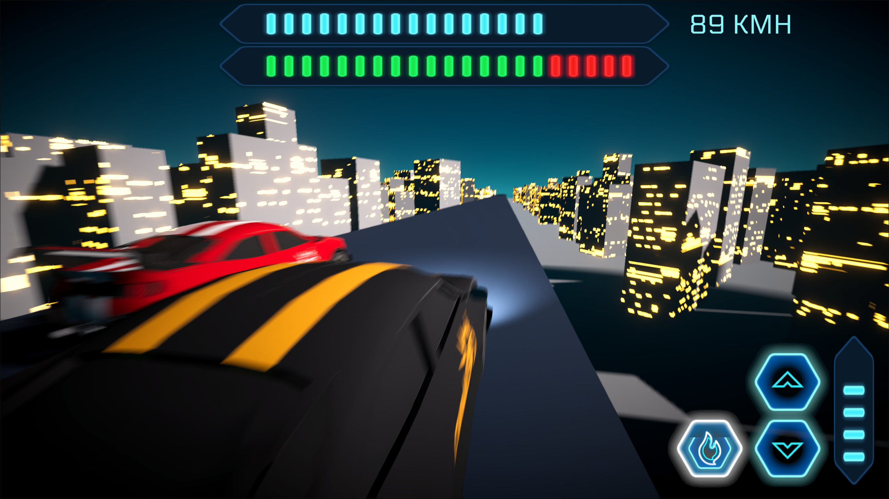

Game / early demo
Ludicrous Racer
An early drag-racing demo built in Unity, featuring a single race against an AI opponent.

About the game
A Unity drag-racing demo against an AI-controlled opponent, with future plans for car upgrades, new cars and multiplayer races.